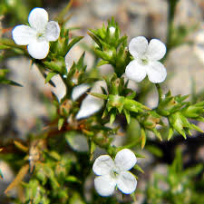

Tetrachondraceae
Tetrachondraceae is a small family of low-growing, creeping perennial herbs belonging to the order Lamiales. It comprises only two genera, Tetrachondra and Polypremum, often found in wet or aquatic habitats, characterized by opposite leaves and small, 4-merous flowers.
Overview
Tetrachondraceae is a small family consisting of just two genera and three species, placed within the large and diverse order Lamiales (part of the Asterid clade of eudicots). The family has a remarkably disjunct distribution: Tetrachondra has one species in New Zealand and another in southern South America (Patagonia, Tierra del Fuego), while Polypremum has a single species native to the Americas (southeastern USA south to South America).
These plants are small, often inconspicuous, creeping or mat-forming herbs typically found in damp, marshy, or semi-aquatic environments, such as stream banks, lake margins, or wet depressions. Their phylogenetic placement within Lamiales has been confirmed by molecular studies, although their exact relationship to other families in the order remains somewhat debated, highlighting their unique evolutionary path.
Quick Facts
- Scientific Name: Tetrachondraceae
- Common Name: (No widely accepted common name)
- Genera: Tetrachondra, Polypremum
- Number of Species: 3
- Distribution: Disjunct: New Zealand, Patagonia/Tierra del Fuego (Tetrachondra); Americas (Polypremum)
- Evolutionary Group: Eudicots - Asterids - Lamiids - Lamiales
Key Characteristics
Growth Form and Habit
Plants are small, creeping or mat-forming perennial herbs. Stems are slender and often root at the nodes where they touch the substrate. They typically grow in wet soil, marshes, or shallow water.
Leaves
Leaves are arranged oppositely on the stem and are connected across the node by a distinct line or ridge. They are simple, small, entire (smooth margins), and often somewhat fleshy or succulent. Stipules are absent (estipulate).
Inflorescence
Flowers are small and inconspicuous. In Tetrachondra, flowers are solitary in the leaf axils. In Polypremum, flowers are arranged in terminal, leafy dichasiad cymes.
Flowers
Flowers are bisexual and actinomorphic (radially symmetrical), characterized by a 4-part structure:
- Calyx: Composed of 4 distinct or basally fused sepals, which are persistent in fruit.
- Corolla: Composed of 4 petals fused at the base to form a short tube with spreading lobes (sympetalous). Corolla is typically white.
- Androecium: Consists of 4 stamens, attached to the corolla tube (epipetalous) and alternating with the corolla lobes.
- Gynoecium: A single superior ovary composed of 2 fused carpels. It typically has 2 locules (but may appear 4-locular due to false septa) with axile placentation. Each locule contains few ovules. A single style arises from the ovary apex, topped by a capitate or slightly 2-lobed stigma.
Fruits and Seeds
The fruit is typically a capsule that splits open septicidally or loculicidally. In Polypremum, the fruit sometimes splits further into 4 one-seeded units (nutlets). Seeds are small.
Chemical Features
The family is known to produce iridoid compounds, a characteristic common within the order Lamiales.
Field Identification
Identifying Tetrachondraceae relies on the combination of small, creeping habit, opposite entire leaves, and small, 4-merous flowers.
Primary Identification Features
- Small, Creeping/Mat-forming Herb Habit: Often in wet habitats.
- Opposite, Simple, Entire Leaves: Often somewhat fleshy, connected by a line across the node.
- Small, White, 4-Merous Flowers: 4 calyx lobes, 4 corolla lobes, 4 stamens.
- Sympetalous Corolla: Petals fused into a short tube.
- Superior Ovary: Ovary with 2 carpels.
- Fruit a Capsule or 4 Nutlets: Small dry fruit.
Secondary Identification Features
- Aquatic or Semi-aquatic Habitat: Common preference.
- Stems Rooting at Nodes: Facilitates vegetative spread.
- Flowers Solitary or in Cymes: Depending on genus.
Seasonal Identification Tips
Observe throughout the growing season:
- Vegetative Features: The creeping habit and opposite leaves are visible during active growth.
- Flowering/Fruiting: Flowers and fruits are small and may be produced over an extended period when conditions are favorable (sufficient moisture and warmth).
Common Confusion Points
Small, creeping herbs in wet habitats can belong to various families:
- Plantaginaceae (Plantain Family): Includes aquatic/semi-aquatic genera like Callitriche (highly reduced unisexual flowers, opposite leaves) and Limosella (often basal leaves, different flower structure).
- Scrophulariaceae sensu lato (Figwort Family): Many herbs, but flowers are typically 5-merous and often zygomorphic (bilaterally symmetrical).
- Rubiaceae (Madder Family): Often have opposite leaves, but possess interpetiolar stipules (lacking in Tetrachondraceae) and typically have an inferior ovary.
- Caryophyllaceae (Pink Family): Often have opposite leaves, but petals are usually free (not fused), ovary structure and fruit type (capsule opening by teeth/valves) differ.
- Elatinaceae (Waterwort Family): Small aquatic/marsh herbs with opposite leaves, but flowers have free petals and different ovary/fruit structure.
Field Guide Quick Reference
Look For:
- Small creeping/mat-forming herb
- Wet or aquatic habitat
- Opposite, simple, entire leaves
- Small white flowers
- 4 calyx lobes, 4 fused corolla lobes, 4 stamens
- Superior ovary (2 carpels)
Key Distinctions:
- Strictly 4-merous flower
- Sympetalous corolla
- Opposite leaves without stipules
- Habitat preference
Notable Examples
The family contains only two genera with three species in total.

Tetrachondra hamiltonii
(New Zealand Tetrachondra)
Endemic to New Zealand, this species forms dense mats in wet, boggy ground or shallow water. It has tiny, somewhat fleshy opposite leaves and produces solitary, minute white flowers in the leaf axils.

Tetrachondra patagonica
(Patagonian Tetrachondra)
Found in southern Patagonia and Tierra del Fuego, this species is very similar vegetatively to T. hamiltonii, forming mats in wet habitats. It also has solitary, axillary, 4-merous white flowers.

Polypremum procumbens
Juniperleaf / Rustweed
Native to the Americas, this species is often found as a weed in sandy, moist, disturbed areas. It forms low mats with wiry stems and narrow, pointed opposite leaves. The small white flowers are borne in leafy terminal cymes. The fruit often breaks into 4 nutlet-like segments.
Phylogeny and Classification
Tetrachondraceae is firmly placed within the order Lamiales, a large order in the Lamiid clade of Asterids. Its position within Lamiales has historically been uncertain due to its somewhat simple morphology. Molecular phylogenetic studies have placed it in various positions, sometimes near Oleaceae (Olive family) or Calceolariaceae, but it generally appears as a somewhat isolated lineage within the order.
The family's highly disjunct distribution (New Zealand, Patagonia, Americas) is biogeographically interesting, suggesting either ancient vicariance dating back to Gondwana or long-distance dispersal events. The relationship between the two genera, Tetrachondra and Polypremum, is strongly supported, forming this small, distinct family.
Position in Plant Phylogeny
- Kingdom: Plantae
- Clade: Angiosperms (Flowering plants)
- Clade: Eudicots
- Clade: Asterids
- Clade: Lamiids
- Order: Lamiales
- Family: Tetrachondraceae
Evolutionary Significance
Tetrachondraceae is significant for:
- Biogeography: Its striking intercontinental disjunction provides data for studying historical plant movements.
- Phylogenetic Placement: Represents a small, potentially early-diverging or morphologically simplified lineage within the large Lamiales order.
- Adaptations to Wet Habitats: Shows morphological adaptations (creeping habit, rooting nodes) for life in aquatic or semi-aquatic environments.
- Floral Simplicity: The simple, 4-merous floral structure contrasts with the often complex, zygomorphic flowers common in many other Lamiales families.